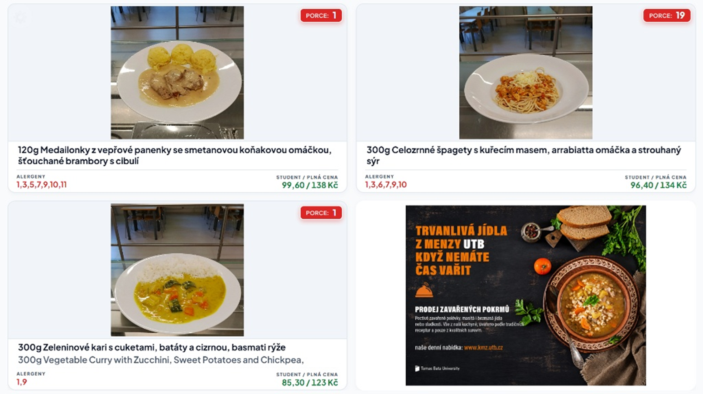
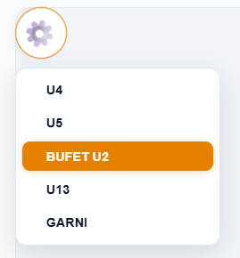

Zobrazení na TV (Kiosk panel)
Televizní infopanel slouží jako hlavní prezentační část celého systému. Jde o webovou aplikaci navrženou pro bezúdržbový, nepřetržitý provoz v tzv. Kiosk módu na televizorech v menzách. Aplikace sama stahuje a přehledně zobrazuje aktuální nabídku jídel ze serveru bez jakéhokoliv zásahu obsluhy.
Rozhraní funguje jako jednostránková aplikace (SPA) vykreslovaná u klienta (Client-Side Rendering). Data se periodicky stahují přes asynchronní HTTP dotazy na REST API serveru. Kompletní denní jídelníček se aktualizuje každých 5 minut, zatímco počty zbývajících porcí se stahují každých 30 sekund.
Struktura prezentační karty pokrmu
Každé jídlo se na obrazovce zobrazuje na samostatné kartě s přehlednou vnitřní strukturou. Karta obsahuje tyto prvky:
- Fotografie jídla – reálný snímek pořízený obsluhou přes mobilní aplikaci. Pokud jídlo ještě nemá v databázi fotku, zobrazí se neutrální zástupný obrázek s logem Menzy UTB.
- Název jídla – název stažený z API WebKreditu. Pokud je k dispozici anglický překlad, zobrazuje se pro zahraniční strávníky přímo pod českým textem menším a světlejším písmem.
- Zbývající porce – dynamický štítek v pravém horním rohu fotky ukazující aktuální počet dostupných porcí. Hodnota se na pozadí aktualizuje v reálném čase.
- Alergeny – číselné kódy obsažených alergenů podle směrnice EU, seřazené vzestupně.
- Cena – zvýhodněná studentská cena a plná cena pro veřejnost, oddělené lomítkem.

Dynamický responzivní layout (CSS Grid)
Rozvržení karet se automaticky přizpůsobuje počtu nabízených jídel, aby plocha vypadala co nejlépe a byla esteticky vyvážená. Použitím relativních jednotek viewportu (vh, vw) a CSS Gridu aplikace perfektně sedí na Full HD (1920 × 1080) i 4K (3840 × 2160) obrazovkách bez jakýchkoliv posuvníků.
| Počet pokrmů | Rozložení mřížky | Popis |
|---|---|---|
| 1–2 | 2 sloupce, 1 řádek | Velké karty přes celou výšku obrazovky |
| 3–4 | 2 sloupce, 2 řádky | Standardní čtvercové rozložení |
| 5–6 | 3 sloupce, 2 řádky | Kompaktnější karty se zachováním čitelnosti |
| 7–8 | 4 sloupce, 2 řádky | Maximální využití plochy obrazovky |
Pokud je celkový počet jídel lichý a v mřížce zůstane volné místo, aplikace tam automaticky vloží propagační kartu s obrázkem (soubor zavareniny.png), aby plocha nezůstala nevzhledně prázdná.
Automatické odstraňování vyprodaných pokrmů
/api/portions) každých 30 sekund. Jakmile se jídlo zcela vyprodá (počet porcí klesne na 0), karta z obrazovky okamžitě zmizí a mřížka se sama přeskládá.
Pokud se vyprodají úplně všechna jídla, mřížku nahradí zpráva „Dnes není dostupná žádná nabídka." Výjimkou je menza Garni (canteen_id = 15), u které vyprodaná jídla ponecháváme viditelná, protože tato menza neposkytuje údaje o počtu zbývajících porcí.
Animované rolování dlouhých textů (Marquee)
Pokud název jídla přesahuje vyhrazené svislé místo na kartě (např. u složitějších názvů s rozpisem gramáže a přílohy), automaticky se spustí plynulé svislé rolování textu (marquee efekt).
Pokud má jídlo anglický překlad, animace střídá českou a anglickou variantu názvu s krátkými pauzami. Český text svítí přibližně 65 % času celého cyklu, poté jej plynule vystřídá anglická verze na zbývajících 35 %. Strávníci tak pohodlně přečtou oba jazyky, aniž by byla karta přeplněná textem.
Administrační přepínání stravovacích zařízení
Pro snadné nastavení televizních panelů bez upravování kódu nebo přepisování URL adresy najdete v levém horním rohu skrytý přepínač menz. Ikona ozubeného kola má ve výchozím stavu průhlednost pouhých 5 %, takže pro běžné strávníky zůstává prakticky neviditelná a neruší celkový vzhled.
Po najetí myší (nebo klepnutí na dotykové obrazovce) se otevře postranní menu s výběrem menz (U4, U5, Bufet U2, U13, Garni). Zvolené nastavení se uloží do paměti prohlížeče (localStorage) a zůstane zachované i po restartu televize, výpadku proudu nebo aktualizaci stránky.

Přepínání pomocí URL parametrů
Menzu můžete zvolit také přímo v URL adrese. To se skvěle hodí při hromadném nasazování, kdy každému televizoru v konfiguraci prohlížeče nastavíte pevnou adresu s parametrem:
| Parametr | Příklad | Výsledek |
|---|---|---|
canteen_id |
/?canteen_id=3 |
Zobrazí jídelníček menzy U5 |
canteen |
/?canteen=u13 |
Zobrazí menzu U13 (textový alias) |